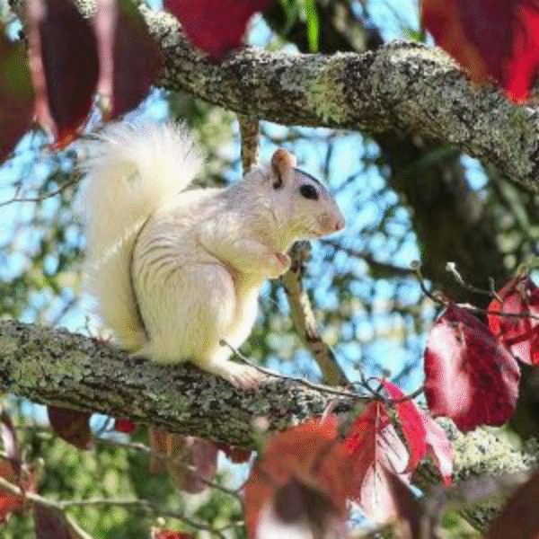

Pandalene Williams
Aspiring Student
I am a full time student seeking a degree in Computer Science with a focus on Web Development. I will graduate from Wake Tech in the Spring of 2022, if all goes well. At that time I will continue my studies at a 4 year college.
Featured Projects
View selected projects below.
Biltmore Bootstrap
Creation of an interactive app for Bilmore
View project / case studyBrevard, NC Full Site
Choose an area to visit and create a website in Wordpress
View project / case studyGoals
To continue my education in the direction of Web Development.
- Complete Degree at Wake Tech
- Continue to 4 Year College
- Obtain Programming Certificates
To continue my education in the direction of Web Development.
- Complete Degree at Wake Tech
- Continue to 4 Year College
- Obtain Programming Certificates
Education
Wake Tech - Raleigh
Computer Science, Web Development
Classes completed include Bootstrap, Python, CSS, HTML, SQL, and Wordpress.
In addition to programming, these certificates have been obtained:
- Email Marketing
- Content Marketing
- Growth-Driven Design
- Semrush SEO Toolkit
- Backlink Management
- Inbound Marketing
- SEO Fundamentals